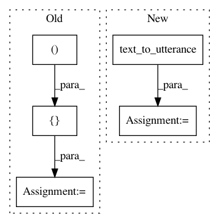

0df03347b9e26ef6153d1a1bed49991b51b09a9d,snips_nlu/tests/test_intent_classifier_featurizer.py,CooccurrenceVectorizerTest,test_transform,#CooccurrenceVectorizerTest#,824
Before Change
}
]
data = [
(u, builtin_ents, custom_ents),
(u[:-5], builtin_ents, custom_ents),
]
// When
with patch("snips_nlu.intent_classifier.featurizer.get_stop_words") \
as mocked_stop_words:
After Change
t_0 = "yo a b c d e f yo"
t_1 = "yo a b c d e"
u_0 = text_to_utterance(t_0)
u_1 = text_to_utterance(t_1)
builtin_ents = [
{
"value": "e",
"resolved_value": "e",
"range": {
"start": 11,
"end": 12
},
"entity_kind": "the_snips_e_entity"
}
]
custom_ents = [
{
"value": "c",
"resolved_value": "c",
"range": {
"start": 7,
"end": 8
},
"entity_kind": "the_c_entity"
}
]
builtin_parser = EntityParserMock(
{t_0: builtin_ents, t_1: builtin_ents})
custom_parser = EntityParserMock(
{t_0: custom_ents, t_1: custom_ents})
vectorizer = CooccurrenceVectorizer(
config, builtin_entity_parser=builtin_parser,
custom_entity_parser=custom_parser)
vectorizer._language = "en"
vectorizer._word_pairs = {
("THE_SNIPS_E_ENTITY", "f"): 0,
("a", "THE_C_ENTITY"): 1,
("a", "THE_SNIPS_E_ENTITY"): 2,
("b", "THE_SNIPS_E_ENTITY"): 3,
("yo", "yo"): 4,
("d", "THE_SNIPS_E_ENTITY"): 5
}
data = [u_0, u_1]
// When
with patch("snips_nlu.intent_classifier.featurizer.get_stop_words") \
as mocked_stop_words:
In pattern: SUPERPATTERN
Frequency: 3
Non-data size: 5
Instances
Project Name: snipsco/snips-nlu
Commit Name: 0df03347b9e26ef6153d1a1bed49991b51b09a9d
Time: 2019-01-16
Author: clement.doumouro@gmail.com
File Name: snips_nlu/tests/test_intent_classifier_featurizer.py
Class Name: CooccurrenceVectorizerTest
Method Name: test_transform
Project Name: snipsco/snips-nlu
Commit Name: 0df03347b9e26ef6153d1a1bed49991b51b09a9d
Time: 2019-01-16
Author: clement.doumouro@gmail.com
File Name: snips_nlu/tests/test_intent_classifier_featurizer.py
Class Name: CooccurrenceVectorizerTest
Method Name: test_limit_vocabulary
Project Name: snipsco/snips-nlu
Commit Name: 0df03347b9e26ef6153d1a1bed49991b51b09a9d
Time: 2019-01-16
Author: clement.doumouro@gmail.com
File Name: snips_nlu/tests/test_intent_classifier_featurizer.py
Class Name: CooccurrenceVectorizerTest
Method Name: test_cooccurrence_vectorizer_should_persist